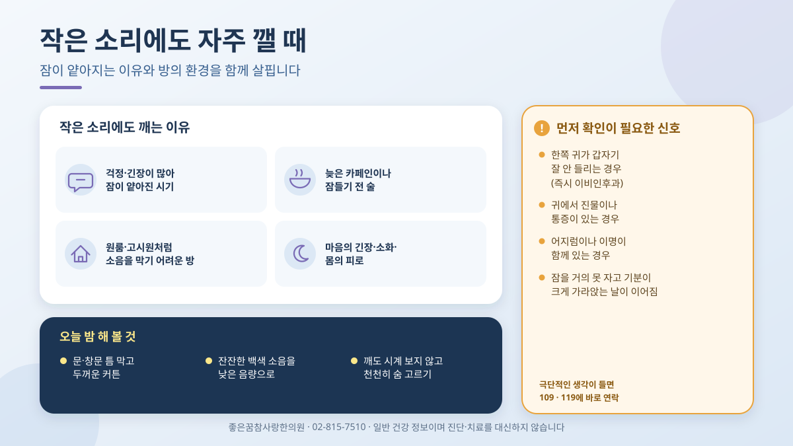

이종호 한의사 감수좋은꿈참사랑한의원 대표원장 (한의사 면허번호 19769)발행 2026-11-22 · 수정 2026-11-25
이 글의 차례
새벽 2시, 냉장고 돌아가는 소리에 또 눈이 떠지셨나요? 작은 소리에 자주 깬다면 저는 소리를 줄이는 일과, 잠이 왜 얕아졌는지 찾는 일을 함께 하자고 말씀드립니다. 같은 소리라도 잠이 깊을 때는 그냥 지나가고, 잠이 얕을 때는 걸리기 때문입니다.
다만 한쪽 귀가 갑자기 잘 안 들리거나 귀가 아프고 진물이 난다면, 잠 이야기보다 이비인후과 진료가 먼저입니다.
낮에는 있는 줄도 몰랐던 냉장고 소리입니다. 다시 눈을 감으니 윗집에서 의자 끄는 소리, 옆에서 자는 가족이 돌아눕는 이불 소리, 멀리 큰길을 지나는 오토바이 소리까지 하나하나 귀에 걸립니다. 베개로 귀를 덮고 돌아누워 보지만 정신은 이미 또렷합니다. 그렇게 뒤척이다 창밖이 희미하게 밝아 올 무렵에야 겨우 선잠이 듭니다.
진료실에서 이런 말씀을 자주 듣습니다. "저는 바늘 떨어지는 소리에도 깨요." "식구들은 다 잘 자는데 저만 유난인가 봐요." 그렇게 말씀하시는 얼굴에는 피곤함과 함께 미안함이 묻어 있습니다.
가족에게 조용히 해 달라고 몇 번씩 부탁하기도 어렵고, 남의 집 발소리를 어찌할 수도 없으니 혼자 참는 밤이 길어지지요. 그동안 얼마나 애쓰셨을까 싶습니다. 소리에 쉽게 깨는 것은 성격이 까다롭거나 의지가 약해서 생기는 일이 아닙니다.
왜 유난히 작은 소리에 깨는 걸까요
잠든 동안에도 귀는 완전히 닫히지 않습니다. 몸은 자는 사이에도 주변 소리를 어느 정도 걸러 듣다가, 낯설거나 나에게 의미 있는 소리가 나면 잠을 깨웁니다. 내 이름을 부르는 소리나 아이 울음소리에 유독 빨리 깨는 것도 이 때문이라고 알려져 있습니다.
밤잠은 처음 몇 시간이 가장 깊고 새벽으로 갈수록 얕아지니, 같은 소리라도 새벽 3~4시에 더 잘 걸립니다.
소리의 종류도 다릅니다. 선풍기나 공기청정기처럼 고르게 이어지는 소리에는 금세 익숙해지지만, 문 닫는 소리나 휴대폰 진동, 발소리처럼 갑자기 났다 그치는 소리는 잠을 쉽게 깨웁니다. 윗집에서 울리는 쿵쿵 소리처럼 낮고 묵직한 소리는 벽과 바닥을 타고 전해져서, 귀마개를 해도 다 막기 어렵다고 느끼는 분이 많습니다.
몸과 마음이 긴장해 있으면 귀가 더 예민해집니다. 걱정이 많은 시기에는 몸이 밤에도 보초를 서듯 경계를 늦추지 못합니다. 이사, 이직, 시험, 가족 병간호처럼 마음 쓸 일이 많은 때 평소 잘 자던 분이 갑자기 작은 소리에 깨기 시작하는 것도 그래서입니다.
깨는 밤을 몇 번 겪고 나면 오늘도 깨면 어쩌나 하는 마음이 생기고, 그 마음이 다시 귀를 열어 둡니다.
늦은 시간의 커피와 자기 전 술도 잠을 얕게 만듭니다. 술은 잠드는 것을 돕는 것처럼 느껴져도 잠의 뒷부분을 얕게 만들어 새벽에 자주 깨게 하는 요인으로 알려져 있습니다. 오후에 마신 커피 한 잔이 밤까지 남아 잠의 깊이를 덜어 내는 분도 있습니다.
불면은 원인이 하나가 아닙니다. 통증, 긴장, 카페인, 늦은 식사, 불규칙한 생활 리듬, 걱정거리가 서로 얽혀 있는 경우가 많습니다. 소리에 깨는 잠도 마찬가지여서, 소리는 마지막에 잠을 흔들었을 뿐 그 앞에 잠을 얕게 만든 사정이 여럿 쌓여 있기도 합니다.
소리에 깬 걸까요, 깨어 있다 소리를 들은 걸까요
어깨가 아파서 오신 분께 제가 꼭 나눠 여쭙는 것이 있습니다. 잠에서 깬 뒤에 어깨가 아픈 건지, 어깨가 아파서 잠이 깨는 건지. 겉보기에는 비슷한 두 문장이지만 환자분이 밤에 겪는 일은 다릅니다.
소리도 똑같이 나눠 여쭙습니다. 소리 때문에 깬 건지, 이미 깨어 있던 차에 소리가 들린 건지. 소변이 마려워서, 더워서, 다리가 불편해서, 혹은 코를 골다 숨이 막혀서 잠이 얕아진 순간에 마침 냉장고 소리가 들렸을 수도 있습니다. 그러면 기억에는 소리에 깼다는 것만 남습니다.
그래서 소리가 없는 밤에도 비슷한 시각에 깨는지가 중요한 단서가 됩니다. 조용한 방에 누우면 귀울림이 더 크게 들려 잠들기 어렵다는 분도 계셔서 귀 상태도 빼놓지 않고 여쭙니다. 깼을 때 가슴이 두근거렸는지, 몸에 열감이 있었는지, 어디가 저렸는지도 함께 듣습니다.
제 짐작과 다른 이야기를 하셔도 괜찮습니다. 그건 아닌데요, 하고 말씀해 주시면 저는 거기서부터 다시 듣습니다. 자기 몸에서 언제 무슨 일이 일어나는지 가장 오래 지켜본 분은 제 앞에 앉은 그분이기 때문입니다.
이런 분들을 자주 뵙습니다
아이를 키우는 분들이 많습니다. 아이가 밤에 깨지 않고 자기 시작한 뒤에도 엄마 아빠의 귀는 한동안 아이 쪽으로 열려 있지요. 이런 분께는 부부가 하루씩 번갈아 밤 당번을 정하고, 당번이 아닌 날만큼은 귀마개를 하고 푹 자 보시라고 말씀드립니다. 한 사람이라도 깊이 자는 밤이 생기면 다음 날 서로를 대하는 마음에도 여유가 생기기 쉽습니다.
공동주택에서 윗집이나 옆집 소리에 시달리는 분들도 자주 뵙습니다. 이런 분들은 소리 자체보다 소리를 기다리는 시간이 더 괴롭다고 하십니다. 밤 11시쯤이면 늘 들리던 발소리가 오늘은 언제 날지, 누운 채로 귀를 기울이게 된다는 것이지요.
이럴 때는 침대 머리를 소리가 덜 들리는 벽 쪽으로 옮기고, 낮은 음량의 고른 소리로 갑작스러운 소리를 덮어 보는 방법을 함께 정합니다.
배우자나 가족의 코골이와 뒤척임 때문에 깨는 분들도 계십니다. 미안해서 말도 못 하고 혼자 참다가 지쳐서 오시지요. 이불을 따로 쓰거나 잠시 방을 나누어 자는 것도 서로의 잠을 지키는 방법일 수 있으니, 사이가 멀어지는 일로 여기지 않으셔도 됩니다.
다만 코골이와 함께 숨이 멎는 것 같은 모습이 보인다면 코를 고는 분께 수면 검사를 먼저 권해 드려야 합니다.
큰길가나 버스 정류장 가까이 사시는 분들은 새벽 첫차 소리, 배달 오토바이 소리에 깹니다. 창문 틈을 막고 두꺼운 커튼을 다는 것만으로도 소리가 조금 무뎌지는 경우가 있습니다. 바닥에 러그를 한 장 깔면 방 안 울림이 줄어든다고 느끼는 분도 계십니다.
소리를 줄이고, 몸의 경계를 낮추는 하루
소리를 막는 일과 몸의 경계를 낮추는 일은 낮부터 시작합니다. 아침에는 일어나는 시각을 먼저 일정하게 맞추고 커튼을 열어 햇빛을 보세요. 밤에 설쳤다고 늦잠으로 보충하면 그날 밤 잠이 더 얕아지기 쉽습니다. 커피는 점심 무렵까지만 드시고, 오후에는 보리차나 따뜻한 물로 바꿔 봅니다.
저녁 식사는 잠들기 3시간 전쯤 마칩니다. 자기 전 술은 줄여 보시고, 마음에 걸리는 일이 많은 날은 저녁 8시쯤 종이에 적어 두세요. 머릿속에서 꺼내 종이 위에 올려놓기만 해도 밤에 붙들고 있을 일이 하나 줄어듭니다.
잠들기 1시간 전에는 휴대폰 알림을 끕니다. 방해 금지 모드를 켜고 진동까지 꺼 두세요. 휴대폰은 잠자리에서 손이 닿지 않는 곳에 두고, 거실과 침실 조명도 이때부터 낮춥니다.
잠들기 30분 전에는 침실의 소리를 한 번 둘러봅니다. 째깍거리는 시계는 다른 방으로 옮기고, 창문과 방문 틈은 문풍지로 막고, 냉장고나 보일러 소리가 들리는 방이라면 방문을 닫아 두세요. 그래도 갑자기 나는 소리가 신경 쓰인다면 선풍기나 공기청정기를 약하게 틀거나, 빗소리처럼 고르게 이어지는 소리를 낮은 음량으로 켜 두는 방법이 있습니다.
갑작스러운 소리가 덜 도드라질 정도면 충분하고, 타이머를 맞춰 잠든 뒤 꺼지게 해도 괜찮습니다.
귀마개를 쓴다면 부드러운 것을 고르고, 손을 깨끗이 씻은 뒤 귀를 살짝 위와 뒤로 당긴 채 천천히 넣습니다. 알람을 못 들을까 걱정된다면 손목 진동 알람이나 침대에서 조금 떨어진 곳의 알람을 함께 쓰시면 됩니다. 아이 소리를 들어야 하는 날에는 한쪽 귀에만 끼우는 분도 있습니다. 귀가 아프거나 가렵거나 진물이 나면 바로 멈추세요.
누워서는 몇 분 동안 편안하게 들이쉬고 조금 길게 내쉬는 숨을 쉬어 봅니다. 어지러우면 바로 멈추고 편하게 숨 쉬시면 됩니다. 깼을 때 휴대폰을 켜서 시각을 확인하는 습관이 있다면 이번 주에는 쉬어 보세요. 몇 시인지 아는 순간 남은 시간을 셈하게 되고, 그 셈이 잠을 더 멀리 보냅니다.
20분 넘게 뒤척인다 싶으면 잠시 일어나 어두운 거실에 조용히 앉아 있다가 졸음이 오면 다시 눕습니다. 이 가운데 한두 가지만 골라 일주일 해 보세요. 다 지키지 못한 날이 있어도 스스로를 탓하지 마시고, 다음 날 다시 하면 됩니다.
혹시 이런 밤이 잦지는 않으신가요? 소리가 나지 않는 날에도 비슷한 시각에 깨는지, 깼을 때 가슴이 두근거리거나 땀에 젖어 있는지, 가족에게서 코를 골다 숨이 멎는 것 같다는 말을 들은 적은 없는지. 귀가 먹먹하거나 삐 소리가 들리지는 않는지, 낮에도 작은 소리에 깜짝깜짝 놀라는지도 돌아보세요.
하나라도 마음에 걸린다면 소리 말고 다른 이유를 함께 살펴볼 때입니다.
소리와 다투지 않는 연습
소리에 깨는 밤이 길어지면 소리가 적처럼 느껴집니다. 윗집 발소리가 나면 화가 나고, 화가 나면 심장이 빨라지고, 그러면 잠은 더 멀어집니다. 소리 하나에 깬 것보다 그 뒤에 이어지는 생각과 감정이 잠을 더 오래 붙잡는 경우가 많습니다.
소리에 놀라 깬 순간 몸은 이미 움찔 굳어 있습니다. 턱이 꽉 다물려 있고, 어깨가 귀 쪽으로 올라가 있고, 손이 주먹을 쥐고 있지요. 이럴 때는 소리를 쫓아내려 애쓰기보다 그 세 곳의 힘을 차례로 빼 보세요. 턱을 살짝 벌리고, 숨을 길게 내쉬며 어깨를 내려놓고, 마지막으로 손가락을 하나씩 폅니다.
처음에는 잘 안 되는 게 당연합니다. 몇 번이고 다시 해 보는 것만으로도 충분히 잘하고 계신 겁니다.
가족에게 부탁해야 할 때도 있습니다. 그럴 때는 조용히 해 달라는 말보다 시간과 행동을 짚어 말씀해 보세요. 밤 11시 넘어서는 방문을 살살 닫아 달라든지, 새벽에 화장실 갈 때는 복도 불 대신 작은 수면등을 켜 달라든지. 구체적인 부탁은 듣는 사람도 지키기가 훨씬 쉽습니다.
나만 예민해서 가족을 불편하게 한다는 자책도 조금 내려놓으셨으면 합니다. 잠을 지키려는 부탁은 유난이 아니라 내 몸을 돌보는 일입니다.
얼마나 지켜보고, 언제 진료를 받을까요
침실 소리를 정리하고 생활을 바꿔 보셨다면 1~2주는 깬 시각과 깨게 한 소리, 다시 잠들기까지 걸린 시간을 적어 두세요. 2~3주가 지나도 밤에 여러 번 깨는 날이 이어지고 낮에 피로와 졸음이 쌓인다면, 혼자 참지 마시고 상담을 받아 보시길 권합니다. 소리가 없는 밤에도 같은 시각에 깬다면 조금 더 일찍 오셔도 좋습니다.
다음과 같은 경우에는 기다리지 말고 먼저 해당 진료를 받으세요.
- 한쪽 귀가 갑자기 잘 안 들리거나 먹먹해진 경우(바로 이비인후과 진료)
- 귀 통증이나 진물이 있거나, 심한 어지럼과 귀울림이 함께 생긴 경우
- 코를 크게 골고 자다가 숨이 멎는 것 같다는 말을 들은 경우(수면 검사를 먼저 권합니다)
- 깰 때 가슴 통증이나 숨참이 있거나 가슴이 심하게 두근거리는 경우(가까운 응급실에서 바로 확인)
- 잠을 거의 못 자는 날이 이어지며 기분이 깊이 가라앉거나 극단적인 생각이 드는 경우(109)
수면제나 신경안정제를 복용 중이라면 처방한 의사와 상의 없이 줄이거나 끊지 않습니다. 마음이 많이 힘들 때는 109로 바로 전화해 이야기를 나눌 수 있습니다.
좋은꿈참사랑한의원에 처음 오시면
처음 오시면 저는 어떤 소리에, 몇 시쯤, 언제부터 깨기 시작하셨는지부터 여쭙니다. 침실 창이 큰길 쪽인지, 윗집이나 옆집 소리가 들리는지, 함께 자는 가족이 있는지도 듣습니다. 깬 뒤 다시 잠들기까지 얼마나 걸리는지, 커피와 술은 언제 얼마나 드시는지, 요즘 마음 쓰이는 일은 없는지도 차례로 여쭙습니다. 귀가 먹먹하거나 귀울림이 있는지도 꼭 확인합니다.
이야기를 충분히 들은 뒤에는 양손을 내어 달라고 하고 맥을 짚습니다. 손끝에 거문고 줄처럼 팽팽하게 닿는 맥을 현맥이라고 하는데, 한의학에서는 이런 맥을 만나면 긴장과 피로가 쌓인 상태가 아닌지 살펴봅니다. 그렇다고 맥 하나로 결론을 내리지는 않습니다. 맥은 지금 몸이 어떻게 버티고 있는지 비춰 주는 그림자에 가깝기 때문입니다.
그래서 필요하다고 판단되면 혀를 보거나 배를 살피고, 몸이 따뜻한 편인지 찬 편인지, 식사와 소화, 대소변은 어떤지 함께 여쭙습니다. 진료실에서는 둘이 아니라 셋이 이야기한다고 저는 생각합니다. 환자분과 환자분의 맥, 그리고 저입니다.
그렇게 모은 이야기로 침이나 한약 상담 등 지금 상태에 맞는 방법을 함께 정합니다. 귀의 문제가 의심되면 이비인후과를, 숨 멈춤이 의심되면 수면 검사가 가능한 의료기관을 먼저 안내해 드립니다. 진료실을 나서기 전에는 침실에서 바꿔 볼 것 한 가지를 정하고, 다시 오시면 지난번 기록을 펼쳐 놓고 깬 횟수와 다시 잠든 시간부터 이어서 여쭙습니다.
오실 때 일주일 동안 깬 시각과 그때 들린 소리, 다시 잠들기까지 걸린 대략의 시간, 커피와 술을 마신 시각, 복용 중인 약을 메모해 오시면 이야기가 훨씬 빨라집니다. 기억나는 만큼만 적으셔도 충분합니다.
마치며
작은 소리까지 듣는 귀는 그만큼 주변을 살피며 살아온 귀이기도 합니다. 아이의 기척을 놓치지 않으려고, 가족의 안부를 챙기려고, 해야 할 일을 잊지 않으려고 늘 열어 두었던 귀입니다. 그동안 이 몸으로 참 많은 일을 해 오셨구나 싶습니다. 이제 밤에는 그 귀를 조금 쉬게 해 주셔도 괜찮습니다.
오늘 밤 혹시 또 깨시거든 시계 대신 무슨 소리였는지 한 단어만 기억해 두세요. 아침에 그 한 단어를 적어 두시면 됩니다. 다음에 오시면 그 한 단어부터 여쭙겠습니다.
함께 읽으면 좋은 글
- 고시원이나 원룸처럼 좁은 방에서 소음과 빛 때문에 잠이 얕을 때는?
- 스마트폰 알림 소리나 진동에 밤마다 깰 때는 어떻게 하나요?
- 겨울밤 창문을 꼭 닫은 조용한 방에 누우면 귀울림이 더 크게 들려 잠들기 어려울 때는 어떻게 살피나요?

왜 유난히 작은 소리에 깨는 걸까요
- 잠든 동안에도 귀는 완전히 닫히지 않습니다.
- 몸은 자는 사이에도 주변 소리를 어느 정도 걸러 듣다가, 낯설거나 나에게 의미 있는…
소리에 깬 걸까요, 깨어 있다 소리를 들은 걸까요
- 어깨가 아파서 오신 분께 제가 꼭 나눠 여쭙는 것이 있습니다.
- 잠에서 깬 뒤에 어깨가 아픈 건지, 어깨가 아파서 잠이 깨는 건지.
이런 분들을 자주 뵙습니다
- 아이를 키우는 분들이 많습니다.
- 아이가 밤에 깨지 않고 자기 시작한 뒤에도 엄마 아빠의 귀는 한동안 아이 쪽으로 열…
소리를 줄이고, 몸의 경계를 낮추는 하루
- 소리를 막는 일과 몸의 경계를 낮추는 일은 낮부터 시작합니다.
- 아침에는 일어나는 시각을 먼저 일정하게 맞추고 커튼을 열어 햇빛을 보세요.
자주 묻는 질문
소리에 예민한 것도 한의원에서 보나요?
잠의 모양과 낮의 긴장, 몸의 상태를 함께 묻고 생활 전체의 리듬 속에서 살핍니다. 귀 문제는 이비인후과 진료를 권합니다.
귀마개를 계속 써도 되나요?
손을 깨끗이 하고 부드러운 것을 쓰되, 귀 안이 불편하거나 염증이 있으면 사용을 멈추고 진료를 받으세요.
잠을 자주 깨는 것과 차이가 있나요?
소리 때문에 깨는지, 깬 뒤 걱정이 많아 다시 잠들지 못하는지에 따라 살피는 방향이 달라집니다.
백색소음을 틀어 놓고 자도 괜찮을까요?
낮은 음량으로 고르게 이어지는 소리는 갑자기 나는 소리를 덜 도드라지게 하는 데 도움이 될 수 있습니다. 너무 크게 틀지 말고, 귀가 울리거나 불편하면 줄이거나 끄세요.
가족의 코골이 때문에 깨는데 따로 자도 될까요?
서로의 잠을 지키기 위해 잠시 방을 나누는 것도 방법입니다. 다만 코골이와 함께 숨이 멎는 모습이 보이면 코를 고는 분이 수면 검사를 먼저 받아 보시길 권합니다.
좋은꿈참사랑한의원은 재진 때 지난번 이야기부터 이어서 여쭙니다. 진료시간과 예약은 오시는 길에서 확인하세요.
어디서 상담받을 수 있나요?
좋은꿈참사랑한의원은 서울 동작구 만양로2길 2 신성빌딩 3층·5층(서울 동작구 상도동, 7호선 상도역 3번 출구 근처)에 있습니다. 한의사 3명(이종호 대표원장, 조영기 수석진료원장, 정원영 진료원장)이 진료합니다. 진료시간은 평일 09:30~20:00(점심 13:00~14:00), 토·일·공휴일 09:30~15:00이며, 방문 전 전화로 확인을 권합니다. 예약은 네이버 예약, 카카오톡 상담, 전화 02-815-7510로 받습니다.
이 글은 일반적인 건강 정보이며 개인의 진단이나 치료를 대신하지 않습니다. 증상이 있거나 복용 중인 약이 있다면 진료를 통해 확인하세요. 치료 효과는 개인마다 다를 수 있습니다.
작성 기준: 일반적으로 알려져 있는 건강 정보를 참고해 정리했습니다(대표원장 감수). 증상 기록은 1~2주 동안 하루 1회, 비슷한 시간에 적어 오시면 지난 상태와 비교하기 쉽습니다.